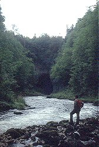

Polje
Karst Window
First a Definition from the
 Glossary of Speleological and Caving Terms:
A large closed depression draining underground, with a flat floor across which
there may be an intermittent or perennial stream.
The polje may be liable to flood and become a lake, and its floor makes a
sharp break with parts of surrounding slopes.
Glossary of Speleological and Caving Terms:
A large closed depression draining underground, with a flat floor across which
there may be an intermittent or perennial stream.
The polje may be liable to flood and become a lake, and its floor makes a
sharp break with parts of surrounding slopes.
|  | |
|---|---|
Image: The end of the Rakov Polje in
 Rakov National Park
near Postojna in Rakov National Park
near Postojna in
 Slovenia. Slovenia.
|
 |
| Image: a Polje in
Taurus Mountains,
Turkey.
|
Polje is the Slovenian word for field, which means the flat and very fertile ground of the valleys in Slovenia. In the area around Postojna many valleys show the same characteristics:
- The valleys are rather small, a few hundred meters wide and up to one or two kilometers long.
- The sides of the valleys are rather steep.
- Most valleys have a stream flowing from one end to the other.
- The stream enters the valley in a karst spring, often the entrance to a cave.
- The stream leaves the valley in a ponor or the entrance to a cave.
- And last but not least: the valley has a flat and very fertile ground.
This typical form of a Polje is easy to explain, after the way they were formed is understood. The whole karst area is drained underground by caves. If the caves are rather close to the surface and rather big too, sometimes the roof collapses and forms a doline. The stream that flows through the cave now flows through the Doline and the doline looks like a valley with steep walls and a river arising from a cave and disappearing into another cave.
As erosion continues, several parts of the cave may collapse and it looks like dolines or poljes connected by short caves and natural bridges. After some time the remaining natural bridges collapse too and the dolines get connected, to form bigger poljes.
Poljes are also called karst windows, as they look like windows of not karstified areas in a karst area. The ground of the poljes is not karstified as it is at or below the karst ground water surface. The cave river of the cave system is the ground water surface, as soon as the drainage moves down, the karst ground water will follow and the polje will fall dry. It will become a dry valley.

{kind=link}